Informe final sobre el analisis exploratotio, ordenacion,clasificacin y prueba de hipotesis multivariada de la base de datos Aves de la montaña Yushan, Taiwan.
Autor/a
Luis Menco, Jesus Villar y Winston Bonnett
Introducción
La riqueza y composición de especies pueden explicarse mediante gradientes ambientales (Caughley et al., 1988). La densidad de aves a lo largo de estos gradientes es un concepto clave en ecología y biología de la conservación, refiriéndose a la variación de la cantidad de aves en relación con factores ambientales como altitud, temperatura o vegetación. La distribución de especies a lo largo de estos gradientes está condicionada por factores abióticos y bióticos, determinantes para su persistencia temporal y espacial (Marrón, 1984). El desplazamiento entre gradientes de elevación implica cambios en las condiciones locales debido a variaciones ambientales como temperatura, disponibilidad de alimento y tipo de vegetación, afectando directamente a las comunidades de aves (Cardona, 2023).
El sistema montañoso de Yushan, Taiwán, es un sitio óptimo para estudiar la densidad y biodiversidad de aves, ya que facilita una rápida sucesión de especies a través de distintas altitudes. La mayoría de las investigaciones sobre patrones biogeográficos en montañas se han centrado en regiones tropicales, y Yushan se encuentra dentro de esta categoría (Martin et al., 2021). Estudios como los de Ding (1993) y Ding et al. (2005) proporcionan datos sobre comunidades de aves a lo largo del gradiente de elevación en Yushan, recopilando información sobre variables ambientales del sistema montañoso. El primer estudio reveló un incremento evidente en la riqueza y diversidad de especies de aves a través de comunidades sucesionales progresivas. En este contexto, surge la pregunta: ¿Cómo afecta el tipo de vegetación a la densidad de aves, considerando el efecto de variables ambientales?
Objetivos
Objetivo general
Determinar los cambios en la composición de aves en diferentes tipos de vegetación en la montaña Yushan, Taiwán.
Objetivos específicos
Evaluar la composición de aves encontradas en los diferentes tipos de vegetación.
Identificar como las variables ambientales condicionan la distribución y composición de aves encontradas en la montaña Yushan en diferentes tipos de vegetación.
Hipótesis
Hipótesis con la densidad de aves
Ho: No se evidencian diferencias en la densidad de aves para los tipos de vegetación.
Ha: Se evidencian diferencias en la densidad de aves para los tipos de vegetación.
Hipótesis con las variables ambientales
Ho: No se evidencian diferencias en las variables ambientales para los tipos de vegetación.
Ha: Se evidencian diferencias en las variables ambientales para los tipos de vegetación.
Diagrama de flujo
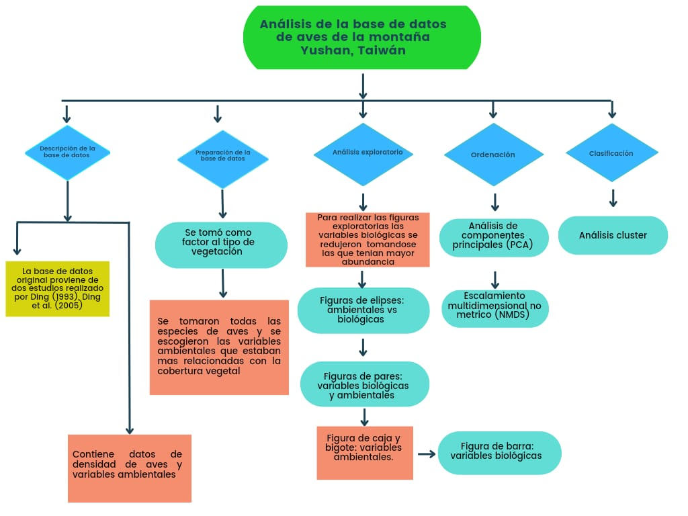
Figura 1: Diagrama de flujo
Figuras exploratorias
Cargar librerias
Código
library(tidyverse)library(xtable) # Importar y exportarlibrary(openxlsx) # exportar "*.xlsx" library(readxl) # Importar y exportarlibrary(gtable) # Importar y exportarrequire(stats) # No se requiere instalarlibrary(lattice) # No se requiere instalarlibrary(ggrepel) # insertar rótulos a los puntosrequire(SciViews) # Fig. dispersión con coef. de pearsonlibrary(plotrix) # Figuras de cajas con múltiples variableslibrary(corrplot) # Figuras de elipseslibrary(psych) # Matrices de correlación para figuras de elipseslibrary(GGally) # Requerido para figura de pares con ggpairslibrary(gganimate) # Para figuras animadas de dispersiónlibrary(reshape) # Figuras de cajas con múltiples variableslibrary(gridExtra) # Para figuras estadísticas (varios factores)library(grid) # Para figuras estadísticas (varios factores)
Cargar base de datos (Aves, Taiwan)
Código
datos <-read.csv2("Aves_F.csv") # paquete "utils"
Código
amb = datos[,c(62:71)]biol = datos[,c(3:61)]
Extraer las especies mas abundantes
Código
# Extraer los promedios de las abundanciasprom =colMeans(biol)# Extraer las 9 especies más abundantes # FALSE muestra las 15 menos abundantesab <-names(sort(prom, decreasing =TRUE)[1:9])# Crear un nuevo dataframe con las dos columnas seleccionadasbiol.ab <-data.frame(datos[, ab])# Otra opción de dataframe: spe.ab <- datos1[, ab]
Figuras de elipses
Matriz de correlaciones
Código
# Matriz de correlaciones (M)M <-cor(amb,biol.ab)
Elipse
Código
# Elipse con colorcorrplot(M, method ="ellipse", type="upper")
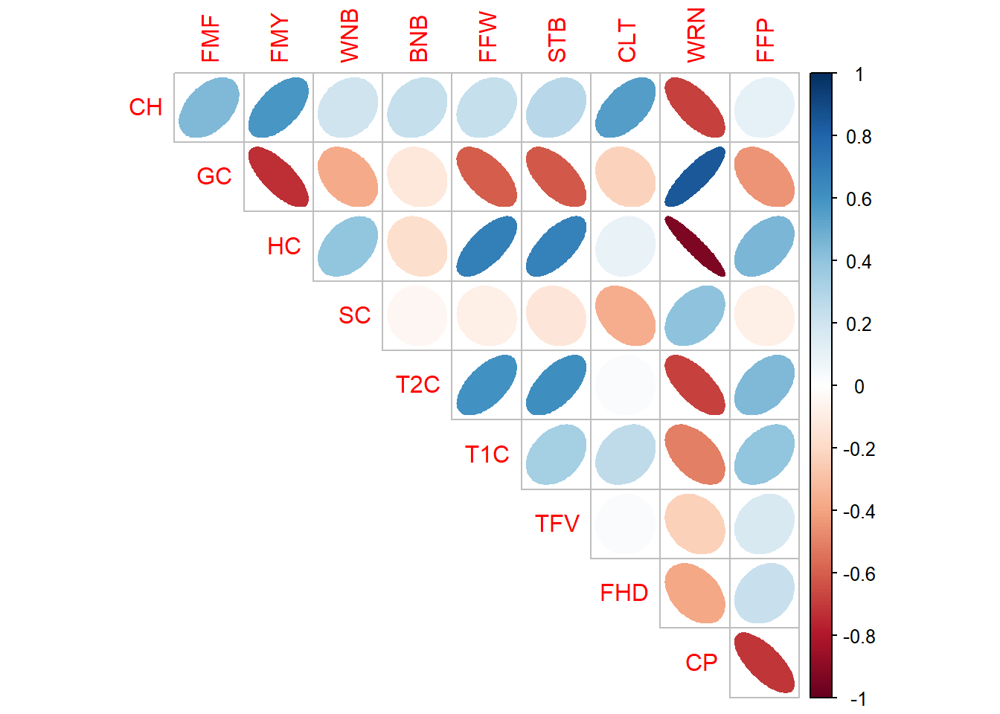
Figura 1: Relación entre las variables ambientales y biológicas, a partir de Figuras de elipses, en la cual aquellas con color azul intenso indican relaciones lineales positivas, y las de rojo intenso asocian regresiones lineales negativas.
Troglodytes troglodytes (WRB) muestra una correlación negativa con la altura del dosel (CH), prefiriendo hábitats con vegetación baja y densa cerca del suelo, lo que facilita la anidación, el forrajeo y la protección contra depredadores. Asimismo, exhibe una correlación positiva con la cobertura del suelo (GC), indicando una preferencia por áreas con una mayor densidad de vegetación en el suelo, lo que proporciona más lugares para anidar y una mayor disponibilidad de alimento. Por último, presenta una correlación negativa con la cobertura de hierbas (HC), evitando hábitats dominados por hierbas y optando por áreas con troncos y estructuras arbóreas en la orilla de los ríos, posiblemente debido a las oportunidades de alimentación y la disponibilidad de sitios de anidación y refugio.
Por otra parte, Abroscopus albogularis y Liocichla steerii presentaron una correlación positiva con la cubierta de hierbas (HC), lo que sugiere una preferencia por hábitats con una densa vegetación herbácea. Esto podría estar relacionado con su ecología y comportamiento, ya que estas especies pueden encontrar recursos importantes en este tipo de hábitat.
Por el contrario, estas especies mostraron una correlación negativa con la cobertura del suelo (GC). Esta asociación puede reflejar una preferencia por evitar áreas con una cobertura densa de vegetación en el suelo. Podría ser que Abroscopus albogularis y Liocichla steerii prefieran hábitats más abiertos o con menos obstáculos en el suelo para su movilidad y búsqueda de alimento.
Figuras de dispersión
Figura de pares para las variables biológicas
La Figura 2 muestra un panel con varias figuras de dispersion entre las parejas de varriables biologicas (densidad de aves).
Código
datos$Veg. <-as.factor (datos$Veg.)ggpairs(data = biol.ab, # Data frameaes(color = datos$Veg., alpha =0.4), # Color por vegetacion upper =list(continuous="points"))
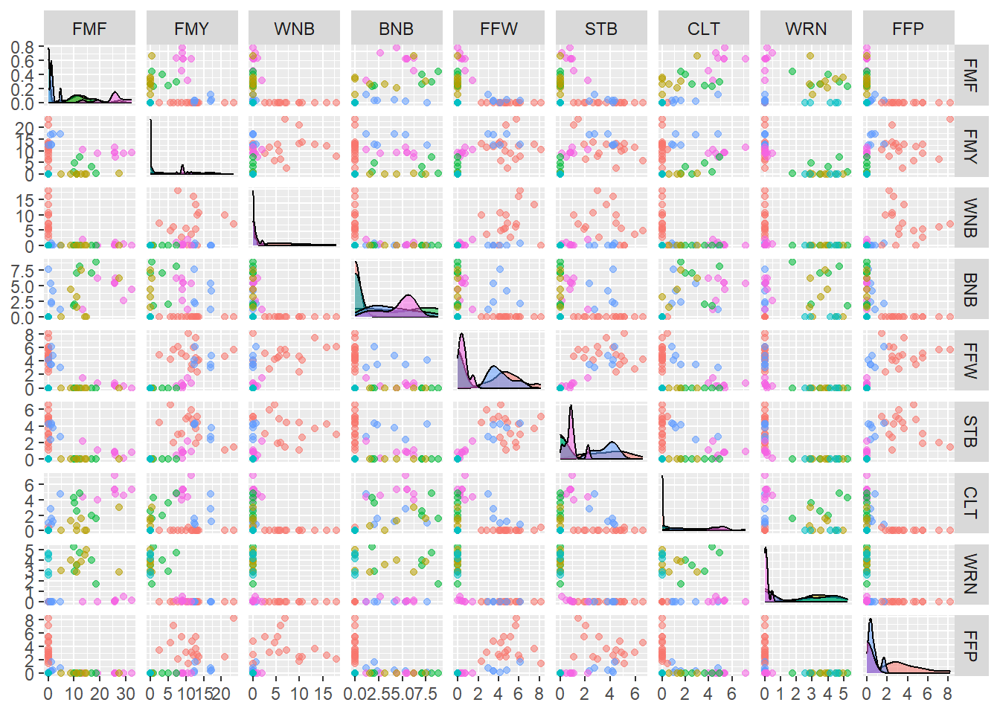
Figura 2: Relación entre las variables biologicas en los seis tipos de vegetacion estudiados, con colores para definir a cada tipo de vegetacion.
Se puede observar que existe cierta diferenciación de las parejas de variables según el tipo de vegetación, debido a que en la mayoría de los gráficos de este panel, los puntos del mismo color presentan cierto nivel de agrupación. Además, pocas parejas de variables muestran puntos dispersos y mezclados. Este patrón refleja las preferencias específicas de las especies de aves por hábitats particulares, como áreas con vegetación herbácea densa o cobertura arbórea, que ofrecen condiciones óptimas para anidar, alimentarse y encontrar refugio.
Figura de pares para las variables ambientales
La Figura 3 muestra un panel con varias figuras de dispersion entre las parejas de varriables ambientales.
Código
ggpairs(datos, # Data framecolumns =c(62:69), # Columnas o variablesaes(color = Veg., alpha =0.5), # Color por vegetacion upper =list(continuous="points"))
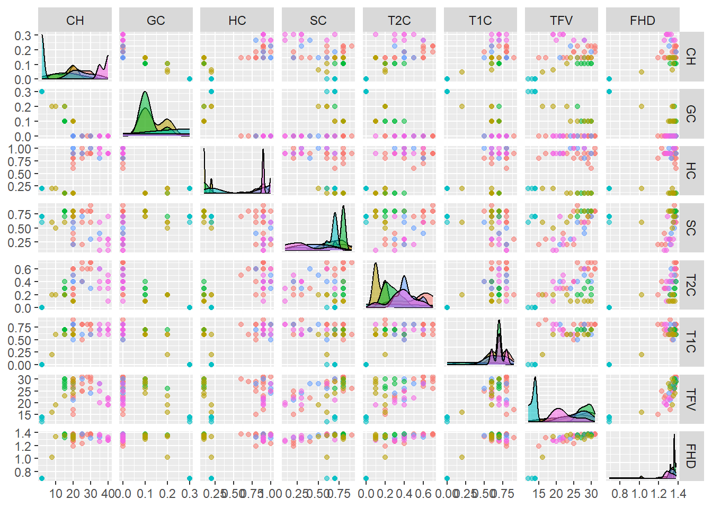
Figura 3: Relación entre las variables ambientales en los seis tipos de vegetacion estudiados, con colores para definir a a cada tipo de vegetacion.
En general, se puede observar que las diferencias entre las parejas de variables son moderadas según el tipo de vegetación. Esto se evidencia en la disposición de los puntos, los cuales comparten el mismo color para representar cada tipo de vegetación. En algunos casos, estos puntos tienden a estar agrupados, mientras que en otros se dispersan y se mezclan con puntos de otros colores. Esta variabilidad refleja las distintas propiedades ambientales de los tipos de vegetación, lo que a su vez ofrece una variedad de hábitats para el mantenimiento de una rica diversidad de aves.
Figura de cajas y bigotes
La Figura 4 muestra un panel con varias figuras de dispersion de las variables ambientales con respecto al tipo de vegetacion.
Figura 4: Variacion de las variables ambientales segun el tipo de vegetacion.
En general, se observa que en la mayoría de las cajas, las medianas no coinciden entre sí. Esto indica que existen diferencias moderadas en las variables ambientales relacionadas con los tipos de vegetación.
Podemos notar que para la cobertura del suelo (GC) y la cobertura de hierbas (HC) hay muy poca variación en cuanto a la distribución de valores, difiriendo entre los tipos de vegetación. En el caso de la cobertura del dosel (T1C) y el índice de diversidad de altura del follaje (FHD), hay una pequeña variación en su distribución de valores y la diferencia entre los tipos de vegetación es muy baja. Para los casos del volumen total de follaje (TFV), cobertura de arbustos (SC), cobertura arbórea secundaria (T2C) y altura del dosel (CH), la distribución de su rango de valores es más alto y la diferenciación entre los tipos de vegetación es moderada.
Figura de barras
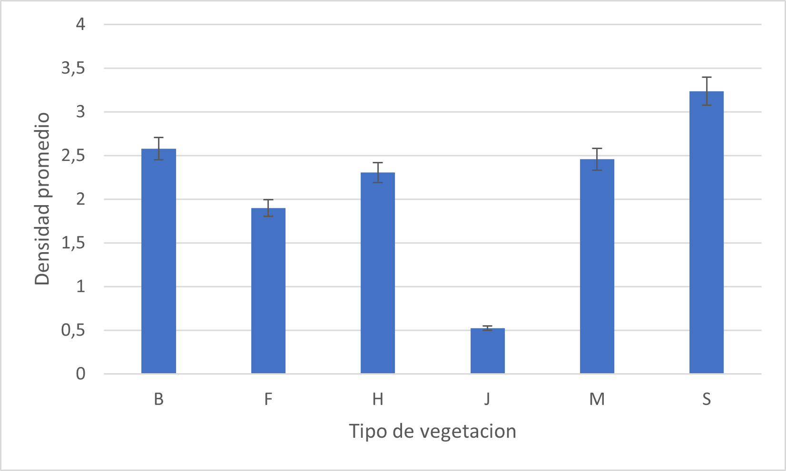
Figura 6: Diferencias en la densidad de aves, en los tipos de vegetación evaluados.
En esta gráfica se pueden apreciar diferencias visuales en cuanto a la composición de aves según los tipos de vegetación. Esto probablemente se debe a que cada hábitat ofrece condiciones ambientales distintas, lo que conlleva a variaciones en la diversidad a lo largo de este gradiente.
Análisis de componentes principales (PCA)
Cargar librerias
Código
# Librerías requeridaslibrary(ggplot2)library(reshape2)library(ggrepel)library(vegan)library(factoextra)library(ggsci)library(ggforce)library(concaveman)library(corrplot)library(tidyverse)library(xtable) # Importar y exportarlibrary(openxlsx) # exportar "*.xlsx" library(readxl) # Importar y exportarlibrary(gtable) # Importar y exportarrequire(stats) # No se requiere instalarlibrary(lattice) # No se requiere instalarlibrary(ggrepel) # insertar rótulos a los puntosrequire(SciViews) # Fig. dispersión con coef. de pearsonlibrary(plotrix) # Figuras de cajas con múltiples variableslibrary(corrplot) # Figuras de elipseslibrary(psych) # Matrices de correlación para figuras de elipseslibrary(GGally) # Requerido para figura de pares con ggpairslibrary(gganimate) # Para figuras animadas de dispersiónlibrary(reshape) # Figuras de cajas con múltiples variableslibrary(gridExtra) # Para figuras estadísticas (varios factores)library(grid) # Para figuras estadísticas (varios factores)library(factoextra)library(FactoMineR)library(ggplot2)library(ggrepel)library(tidyverse)
Código
datos$Veg. <-as.factor (datos$Veg.)
Paso 1: Ajuste de las bases de datos fisiqcoquimica (amb) y biológica (tax.hel)
En esta matriz de autovalores se puede observar que el PCA explica aproximadamente el 83% de la variación de los datos. Esto indica que el análisis se ajusta significativamente a los datos, lo que hace que este sea un buen gráfico explicativo.
Contribución eje 1
Código
fviz_contrib(pca1,choice="var",axes=1)
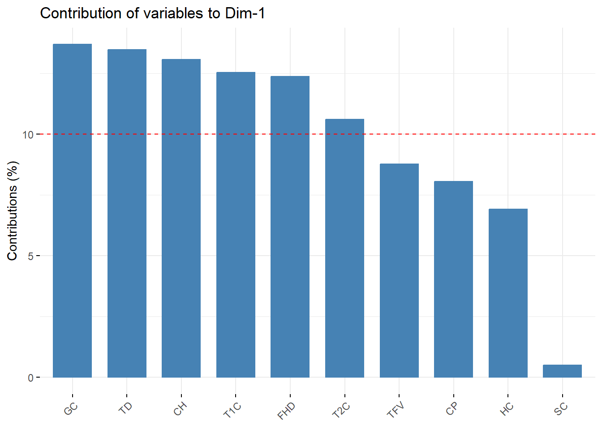
Figura 5: Contribuciones de las variables ambientales, dimensión 1.
Esta gráfica muestra la contribución de las variables ambientales al componente 1. De esta manera, la densidad de árboles (TD), la cobertura del suelo (GC), la cubierta de hierbas (CH), el índice de diversidad de altura del follaje (FHD), la cubierta de dosel (T1C) y la cobertura arbórea secundaria (T2C) son las que tienen más peso en la dimensión 1.
Contribución eje 2
Código
fviz_contrib(pca1,choice="var",axes=2)
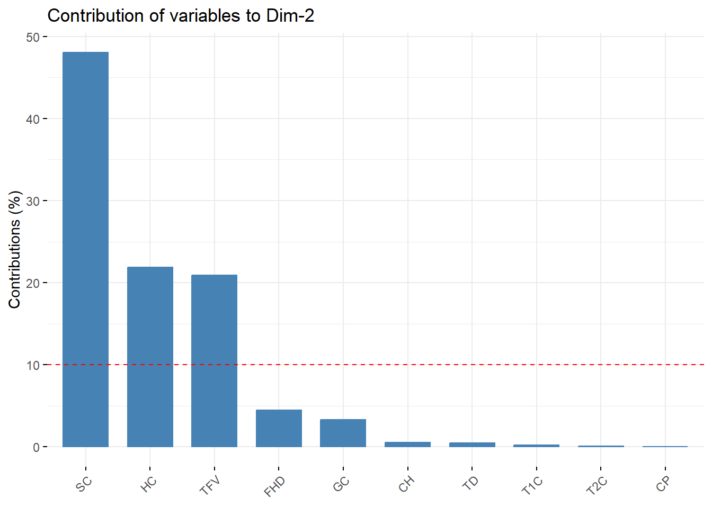
Figura 6: Contribuciones de las variables ambientales, dimensión 2.
Esta gráfica muestra la contribución de las variables ambientales al componente 2. De esta manera, cobertura de arbustos (SC), cubierta de hierbas (HC) y Volumen total de follaje (TFV) son las que tienen más peso en la dimensión 2.
Paso 3: Gráfico de PCA
Código
res.pca<-PCA(amb, scale.unit =TRUE, graph =FALSE, ncp =10)# con variables ambientales# gráfico de PCA con variables ambientales (aqui no estan incluidas las especies)p3<-fviz_pca_biplot(res.pca, geom.ind ="point", col.var ="black",arrowsize=0.4, col.ind = datos$Veg., repel =TRUE, addEllipses =TRUE, legend.title="Vegetación", palette =c("#ff595e", "#ffd166", "#0a9396", "#e76f51", "#8d99ae", "#6a994e")) +theme_bw()# PCA con variables ambientales y especiesacp2<-PCA(tax.hel, graph =FALSE, ncp =23 )coord<- acp2$var$coordcoord<- coord[,1:2]coord<-data.frame(coord)colnames(coord)<-c("PC1", "PC2")coord<-transform(coord, PC1=PC1*5, PC2=PC2*5)fviz_add(p3, coord, color ="#6c757d", geom=c("text"), repel =TRUE, labelsize =3, pointsize =1) +theme(legend.position ="bottom",legend.box ="horizontal")+ggtitle("")
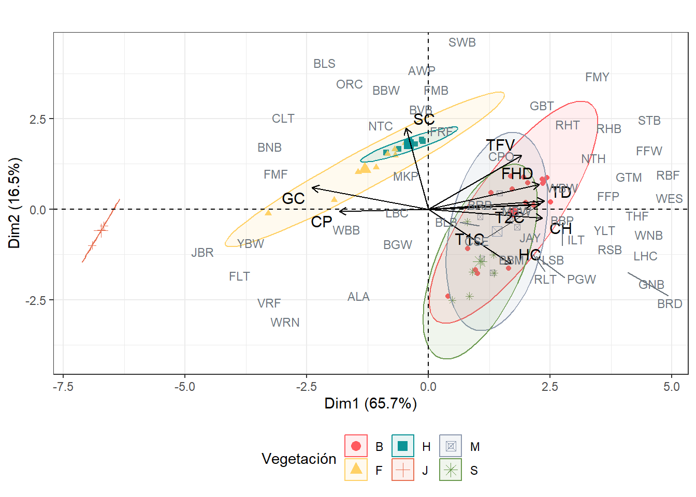
Figura 7: Análisis de componentes principales (PCA). Se observa el biplot con las variables ambientales (Flechas,Texto en negro), las varibles biologicas (texto en gris) de densidad de aves y los tipos de vegetacion (Elipses).
En este gráfico de PCA se observan dos grupos de vegetación (Bosques de cicuta (H) y Bosques de abetos (F) que presentan una composición similar en cuanto a las variables ambientales. Por otro lado, los tipos de vegetación Bosques de piceas (S), Matorral de enebro (J) y bosques mixtos de coníferas y latifoliadas (M) muestran una composición diferente en relación con las variables ambientales que los grupos anteriores. Dos grupo de vegetación (H y F), se caracteriza por valores altos en variables como Cobertura del suelo (GC), Porcentaje de coníferas (CP) y Cobertura de arbustos (SC). En este grupo, las especies Cettia acanthizoides (YBW), Tarsiger indicus (WBB), Syrmaticus mikado (MKP), Muscicapa ferruginea (FRF), Pyrrhula erythaca (BVR), Nucifraga caryocatactes (NTC) y Regulus goodfellowi (FMF) están más asociadas con estos tipos de vegetación.
Por otro lado, los otros grupos de vegetacion (S, J y M), se caracteriza por valores altos en variables como Volumen total de follaje (TFV), Índice de diversidad de altura del follaje (FHD), Cobertura del dosel (T1C), Cobertura de árboles secundarios (T2C), Cobertura de hierbas (HC), Densidad de árboles (TD) y Altura del dosel (CH). En este grupo, especies como Garrulus glandarius (JAY), Hypothymis azurea (BBM), Spilornis cheela (CSE), Aegithalos concinnus (RHT), Glaucidium brodiei (CPO), Dendrocopos leucotos (WBW), Sitta europaea (NTH), Stachyris ruficeps (RHB), Parus monticolus (GBT) y Pomatorhinus ruficollis (LSB) están más asociadas con este tipo de vegetación.Por ultimo el tipo de vegetaion bosques de hoja perenne de hoja ancha (B) presenta poca asociacion con las variables ambientales y biologicas.
Análisis de escalamiento multidimensional no métrico
Ordenación de las especies según los tipos de vegetación
Código
# 1. 1) Ordenación con el nmdsdatos.nmds <-metaMDS(datos[,3:61],trace =FALSE,distance ="bray")datos.nmds
Call:
metaMDS(comm = datos[, 3:61], distance = "bray", trace = FALSE)
global Multidimensional Scaling using monoMDS
Data: wisconsin(datos[, 3:61])
Distance: bray
Dimensions: 2
Stress: 0.05923548
Stress type 1, weak ties
Best solution was repeated 4 times in 20 tries
The best solution was from try 8 (random start)
Scaling: centring, PC rotation, halfchange scaling
Species: expanded scores based on 'wisconsin(datos[, 3:61])'
El estres es 0.05923538 por lo tanto este analisi tiene un buen ajuste y es explicativo para el conjunto de datos evaluados.
Paso 2: NMDS con paquete ggplot2
Coordenadas de los sitios y el factor (coord.sit)
Código
coord.sit <-as.data.frame(datos.nmds$points) # Coordenadas de los sitioscoord.sit$sitio <-rownames(coord.sit) # Crear una columna con nombres de los sitioscoord.sit$grp <- datos$Veg. # Adicionar columna de grupos por región
Coordenadasde las especies (coord.tax)
Código
coord.tax <-as.data.frame(datos.nmds$species) # Dos primeros ejescoord.tax$especies <-rownames(coord.tax) # Insertar columna con nombres de las especies
Figura 8: Escalamiento multidimensional no métrico (NMDS), aplicado a la densidad de aves según el tipo de vegetación.
En esta figura de ordenación se pueden notar la formación de varios grupos, caracterizados por los bosques siempre verdes de hoja ancha (B), los cuales presentan una mayor composición de especies. Hay dos grupos intermedios en su composición de aves, que son los bosques mixtos de coníferas y latifoliadas (M), y los bosques de picea (S), que tienen unas pocas especies. Por último, otro gran grupo está formado por los Bosques de cicuta (H), que es el segundo en cuanto a la composición de especies y se encuentra superpuesto con los bosques de abetos (F) en menor proporción y con una menor composición de especies. El último grupo es el matorral de enebro (J), que es el que menor composición de especies presenta y se encuentra en superposición con el tipo de vegetación antes mencionado.
Se optó por utilizar la distancia de Bray-Curtis en este análisis debido a la presencia de datos con valores cero en la base de datos. Esta medida corrige el efecto de los ceros dobles, ajustándose mejor a los datos de abundancia de especies.
Paso 2: Elección del método de agrupación de mayor ajuste
Siete métodos de agrupamiento
Código
# Método 1. Vecino más cercano "Cl.single", función "hclust" y método "single"Cl.single <-hclust(d.bray,method="single")# Método 2. Vecino más lejano "Cl.complete", función "complete" Cl.complete<-hclust(d.bray,method="complete")# Método 3. UPGMA función "average" Unión Promedio no PonderadoCl.upgma<-hclust(d.bray,method="average")# Método 4. UPGMC función "mcquitty" Unión Promedio PonderadoCl.upgmc<-hclust(d.bray,method="mcquitty")# Método 5. WPGMA función "centroid"Cl.wpgma<-hclust(d.bray,method="centroid")# Método 6. WPGMC función "median"Cl.wpgmc<-hclust(d.bray,method="median")# Método 7. WARD, función "ward"Cl.ward<-hclust(d.bray,method="ward.D")
Figuras de los dendogramas con los siete métodos de agrupamiento
Código
f1 <-fviz_dend(Cl.single, k =6, # k grupos (opcionales)cex =0.7, # tamaño del texto de las ramasylab ="Bray-Curtis", # Rotulo de la distanciamain ="Vecino más Cercano - Single") # Rotulo de títulof2 <-fviz_dend(Cl.complete, k =6, # k grupos (opcionales)cex =0.7, # tamaño del texto de las ramasylab ="Bray-Curtis", # Rotulo de la distanciamain ="Vecino más Lejano - Complete") # Rotulo de títulof3 <-fviz_dend(Cl.upgma, k =6, # k grupos (opcionales)cex =0.7, # tamaño del texto de las ramasylab ="Bray-Curtis", # Rotulo de la distanciamain ="Unión Promedio no Ponderado - upgmc") # Rotulo de títulof4 <-fviz_dend(Cl.upgmc, k =6, cex =0.7, ylab ="Bray-Curtis", main ="Unión Promedio Ponderado - upgmc") grid.arrange(f1,f2,f3,f4, ncol =2)
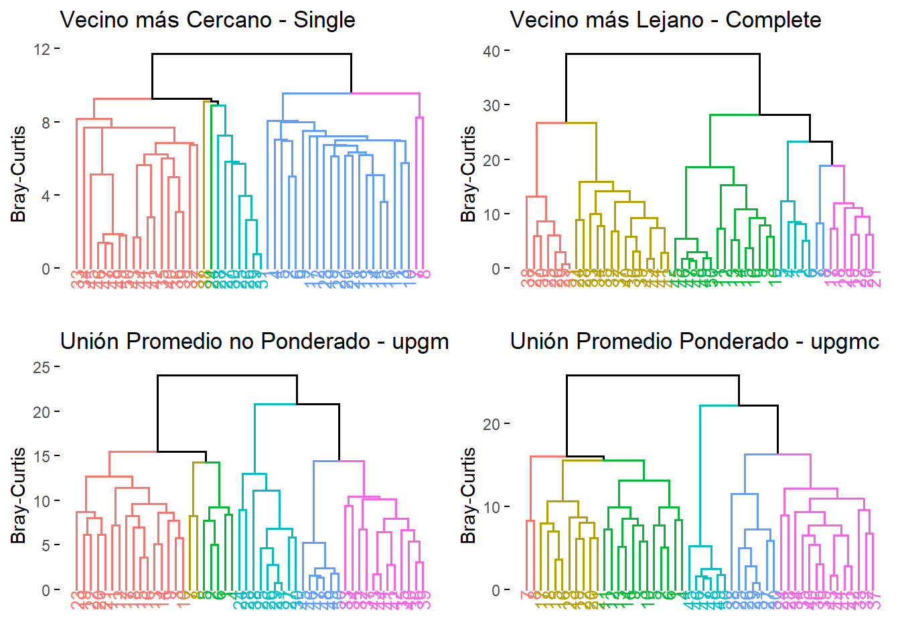
Figura 9: Cuatro dendogramas jerárquicos con la distancia Bry-Curtis.
Se observa la formación de dos grandes grupos con el vecino más cercano y de seis grupos con el vecino más lejano, utilizando la unión promedio no ponderada y la unión promedio ponderada.
Código
f5 <-fviz_dend(Cl.wpgma, k =6, cex =0.7, ylab ="Bray-Curtis", main ="Unión Centroide no Ponderado - wpgma") f6 <-fviz_dend(Cl.wpgmc, k =6, cex =0.7, ylab ="Bray-Curtis", main ="Unión Centroide Ponderado - wpgmc") f7 <-fviz_dend(Cl.ward, k =6, cex =0.7, ylab ="Bray-Curtis", main ="Método de Ward") grid.arrange(f5,f6,f7, ncol =2)
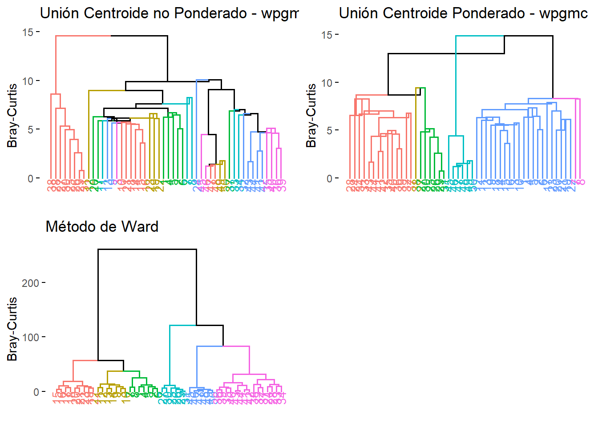
Figura 10: Tres dendogramas jerárquicos con la distancia Bry-Curtis.
Se puede observar que con la unión centroide no ponderada se forman seis grupos, pero estos están dispersos. Con la unión centroide ponderada, aparecen dos grandes grupos y tres grupos pequeños. Finalmente, con el método de Ward se observa que se corrige lo anterior, obteniendo seis grupos con proporciones similares de representantes.
Selección del mejor método de agrupamiento - Correlación Cofenética
Cálculo de las correlaciones cofenéticas
Código
# (1) Correlación cofenpetica para "single"cofenet1 <-cophenetic(Cl.single)simple =cor(d.bray,cofenet1)# (2) Correlación cofenética para "complete"cofenet2<-cophenetic(Cl.complete)compl =cor(d.bray,cofenet2)# (3) Correlación cofenética para "average"cofenet3<-cophenetic(Cl.upgma)upgma =cor(d.bray,cofenet3)# (4) CCorrelación cofenética para "mcquitty"cofenet4<-cophenetic(Cl.upgmc)upgmc =cor(d.bray,cofenet4)# (5) Correlación cofenética para "centroid"cofenet5<-cophenetic(Cl.wpgma)wpgma =cor(d.bray,cofenet5)# (6) Correlación cofenética para "median"cofenet6<-cophenetic(Cl.wpgmc)wpgmc =cor(d.bray,cofenet6)# (7) Correlación cofenética para "ward"cofenet7<-cophenetic(Cl.ward)ward =cor(d.bray,cofenet7)
Tabulación de las correlaciones cofenéticas
Código
# data frame con cofenéticoscofeneticos =data.frame(simple,compl,upgma,upgmc, wpgma,wpgmc,ward)# cofenéticos por cada métodos (Met)cofenet=data.frame(Met =1:7,Cofen=t(round(cofeneticos,3)))# tabla con orden descendente de cofenéticoscof_ordenado = cofenet[order(cofenet$Cofen, decreasing =TRUE), ]cof_ordenado
En este paso, se observa que el método que obtuvo la mayor correlación cofenética fue UPGMA con 0.772. Por lo tanto, este método es el seleccionado para llevar a cabo el análisis de agrupamiento.
Figuras de algunas correlaciones cofenéticas vs. matriz de distancia
Código
# convertir matricesde distancia a vectoresd.bray <-as.vector(d.bray)d.cofenet1 <-as.vector(cofenet1)d.cofenet2 <-as.vector(cofenet2)d.cofenet3 <-as.vector(cofenet3)d.cofenet4 <-as.vector(cofenet4)# crear un data frame con los vectores y agregar una columna de etiquetassimple1 <-data.frame(d.bray, d.cofenet1, d.cofenet2, d.cofenet3, d.cofenet4)
Código
# Figuras correlaciones cofenéticaslibrary(ggplot2)# (1) distancia cofenética para "unión simple" f1<-ggplot(simple1, aes(d.bray,d.cofenet1))+geom_point(size=3, color="#4daf4a") +geom_smooth(method="lm",se=FALSE,color="#377eb8") +geom_smooth(method="loess",se=FALSE,color ="#e41a1c",lty=2,size=1.3) +labs(title="Unión Simple",subtitle=paste("Correlación cofenética",round(cor(d.bray,cofenet1),4)),x="Distancia Bray-Curtis",y="Distancia cofenética") +theme_bw()# (2) distancia cofenética para "unión completa" f2<-ggplot(simple1, aes(d.bray,d.cofenet2))+geom_point(size=3, color="#4daf4a") +geom_smooth(method="lm",se=FALSE,color="#377eb8") +geom_smooth(method="loess",se=FALSE,color ="#e41a1c",lty=2,size=1.3) +labs(title="Unión Completa",subtitle=paste("Correlación cofenética",round(cor(d.bray,cofenet2),4)),x="Distancia Bray-Curtis",y="Distancia cofenética") +theme_bw()# (3) distancia cofenética para "unión upgma" f3<-ggplot(simple1, aes(d.bray,d.cofenet3))+geom_point(size=3, color="#4daf4a") +geom_smooth(method="lm",se=FALSE,color="#377eb8") +geom_smooth(method="loess",se=FALSE,color ="#e41a1c",lty=2,size=1.3) +labs(title="Unión promedio no ponderado - upgma",subtitle=paste("Correlación cofenética",round(cor(d.bray,cofenet3),4)),x="Distancia Bray-Curtis",y="Distancia cofenética") +theme_bw()# (4) distancia cofenética para "unión upgmc" f4<-ggplot(simple1, aes(d.bray,d.cofenet4))+geom_point(size=3, color="#4daf4a") +geom_smooth(method="lm",se=FALSE,color="#377eb8") +geom_smooth(method="loess",se=FALSE,color ="#e41a1c",lty=2,size=1.3) +labs(title="Unión promedio ponderado - upgmc",subtitle=paste("Correlación cofenética",round(cor(d.bray,cofenet4),4)),x="Distancia Bray-Curtis",y="Distancia cofenética") +theme_bw()grid.arrange(f1,f2,f3,f4, ncol =2)
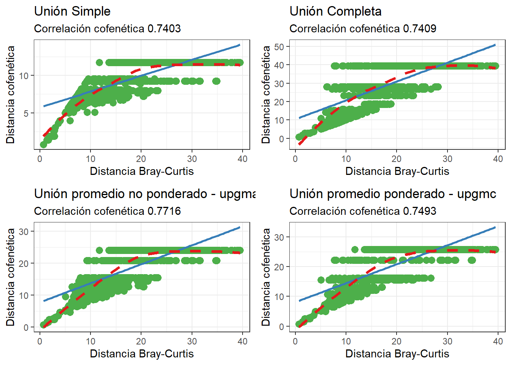
Figura 11: Cuatro regresiones entre la distancia Bry-Curtis empleada y las distancias cofenéticas de cada método de agrupamiento definido.
En estas figuras se puede observar la correlación entre la distancia cofenética y la distancia Bray-Curtis. Cuanto más ajustadas estén ambas a la línea de regresión, más fuerte será su correlación; En nuestro caso, la correlación dio 0.772, correspondiente al método UPGMA. Esto se puede apreciar en la gráfica donde observamos que la distancia Bray-Curtis y la distancia cofenética tienen el mayor ajuste a la línea de regresión con el método de UPGMA.
Paso 3: Número de grupos formados
Niveles de Fusión
Código
# Base de variables a relacionar (amb)biol <- datos[,c(3:61)]
Código
# Crear un data.frame con los datos de altura, k y número de clusterf1 <-data.frame(h = Cl.upgma$height, k =nrow(biol):2, cluster =nrow(biol):2)
Código
# Crear el gráfico de dispersión y agregar etiquetas de textoggplot(f1, aes(x = h, y = k, label = cluster)) +geom_point(color ="grey") +geom_text(color ="red", size =3, vjust =-0.5) +geom_step(color ="grey", direction ="vh") +# Personalizar el gráfico con títulos, etiquetas de ejes y paleta de coloresggtitle("Niveles de Fusión - Distancia Bray-Curtis - UPGMA") +ylab("k (Número de Cluster)") +xlab("h (Altura del Nodo)") +scale_color_manual(values =c("grey", "red")) +theme(axis.title =element_text(size =16)) +theme_classic()
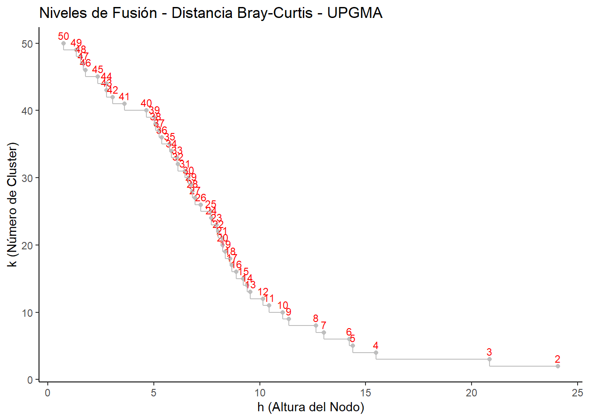
Figura 12: Metodo de niveles de fusión
Se puede observar que el número que tiene una mayor distancia es el 3. Por lo tanto, de acuerdo con este método de niveles de fusión, se forman 3 grupos para el análisis de clúster.
Número optimo de clusters de acuerdo al Ancho de silueta. Índice de calidad de Rousseeuw
Código
# Base de datos (biol)biol <- datos[,c(3:61)]# Distancia utilizada (d.euclid)d.bray <-dist(datos[,c(3:61)])# Método de agrupamiento seleccionado (cl.upgma)Cl.upgma<-hclust(d.bray,method="average")
Código
# 1. Crear un vector vacío (biol.vacio) con asw valoresbiol.vacio <-numeric(nrow(biol))# 2. Silueta "sil" for(k in3: (nrow(biol)-1)){ sil <-silhouette(cutree(Cl.upgma,k=k),d.bray) biol.vacio[k]<-summary(sil)$avg.width} # 3. Mejor o mayor amplitud de silueta (2 particiones)k.mejor <-which.max(biol.vacio)k.mejor
[1] 3
Código
# Grafica de siluetaplot(1:nrow(biol),biol.vacio,type="h",main="Silueta-Número Óptimo de Clusters", xlab="(Número de grupos)",ylab="Amplitud promedio de silueta")axis(1,k.mejor,paste("optimum",k.mejor,sep="\n"),col="red",font=2,col.axis="red")points(k.mejor,max(biol.vacio),pch=16,col="red",cex=1.5)
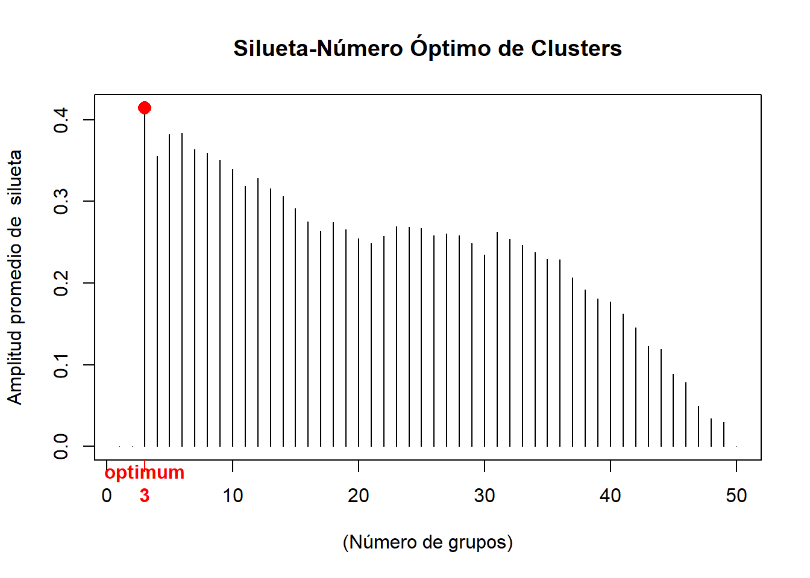
Figura 13: Metodo del ancho de silueta
En esta gráfica se puede corroborar lo encontrado mediante el método de niveles de fusión, ya que el método de ancho de silueta identifica 3 grupos para el análisis de clúster.
Código
cat("","Silueta-Número óptimo de Clusters k=",k.mejor,"\n","Con una aplitud promedio de silueta",max(biol.vacio),"\n")
Silueta-Número óptimo de Clusters k= 3
Con una aplitud promedio de silueta 0.4142577
Figura del dendograma jerárquico final
Código
# Dendograma final fviz_dend(Cl.upgma, k =3, # k gruposcex =0.6, # tamaño del texto de las observacionesylab ="Distancia Bray-Curtis", # Rotulo de la distanciamain ="Unión Promedio no Ponderada (UPGMA)", # Rotulo de títulolower_rect =0, # Inicio de los rectángulos en cerok_colors =c("#00AFBB","#FC4E07","#feb24c"),color_labels_by_k =TRUE, # Colores para cada gruporect =TRUE) # Rectángulos de cada grupo
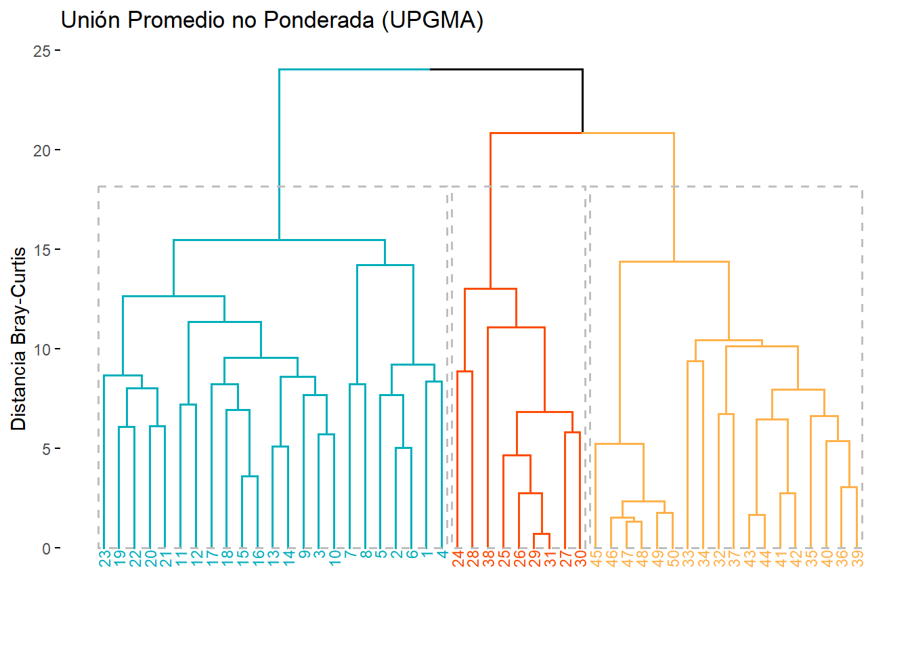
Figura 14: Dendograma jerárquico final con los tres grupos asignados.
En el clúster jerárquico final se puede visualizar la formación de los tres grupos encontrados por el métodos UPGMA. De esta manera, se puede observar que hay dos grupos que son más similares entre sí (color rojo y naranja) y un grupo con una composición un poco más diferente (color azul).
Figura del dendograma no jerárquico final
Agrupamiento elegido en el paso 2 (upgma)
Código
# Matriz de distanciad.bray <-dist(biol)# Método 3. UPGMA función "average" Unión Promedio no PonderadoCl.upgma<-hclust(d.bray,method="average")
Generación de la variable agrupadora (gr)
Código
# Variable agrupadora con k=3 clústergrp <-cutree(Cl.upgma, k =3) # Grupos generados "grp" grl <-levels(factor(grp)) # Rotulos de los grupos formados
Código
# Incluir la variable agrupadora en la base de datosdatos.1=data.frame(grp,biol) # Nuevo dataframe con la variable agrupadora (gr)
Generación del clúster No Jerárquico (K-Means)
Código
fviz_cluster(list(data = amb, cluster = grp),palette =c('#fc8d59','#377eb8','#99d594'), # Colores para cada grupoellipse.type ="confidence", # Elipsesrepel =TRUE, # Elimina solapamiento de observacionesshow.clust.cent =FALSE, # Muestra a los clúster centradosggtheme =theme_bw()) # Tipo de fondo tomado de ggplot2
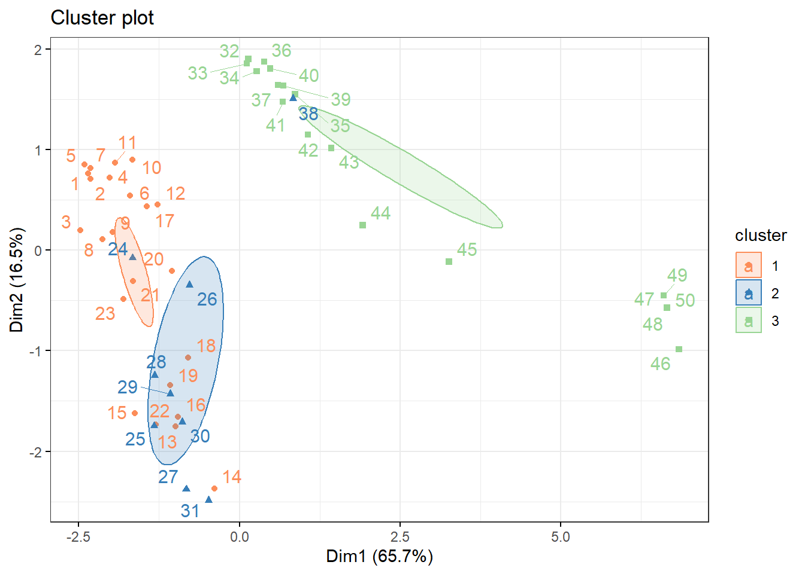
Figura 15: Dendograma no jerárquico final con los tres grupos asignados.
En el dendrograma no jerárquico final se logra corroborar lo observado por el clúster jerárquico final, donde también se formaron tres grupos. Dos de estos grupos muestran una composición similar en cuanto a la densidad de aves, mientras que un tercer grupo presenta una composición de aves diferente respecto a los otros dos.
Paso 4. Variables de mayor contrinución a la clasificación
# Seleccionar columnas de 2 a 10 del data frame peces1 y convertirlas en matrizpromedios2 <- promedios %>%subset(select =c(2:60)) %>%as.matrix()
Código
# Asignar los valores de la primera columna de peces1 como nombres de fila en la matriz peces2rownames(promedios2) <- promedios[,1]
Código
# Mapa de calor con paquete "stats"hclust.fq <-function(promedios2) hclust(promedios2, method="average") # Inserción de UPGMA
Código
library("gplots")heatmap.2(promedios2, # Base de datos en formato matricialmargins=c(5,12), # Margenes de la figurascale ="row", # Estandariza variables diferentes.col =bluered(100), # Colores del mapa de calorxlab ="Variables biologicas", ylab="Grupos de vegetacion", main ="Clasificación de vegetacion", trace ="none", density.info ="none",distfun = dist, # Se puede usar vegdist de "vegan" hclustfun=hclust.fq) # Agrupamiento UPGMA
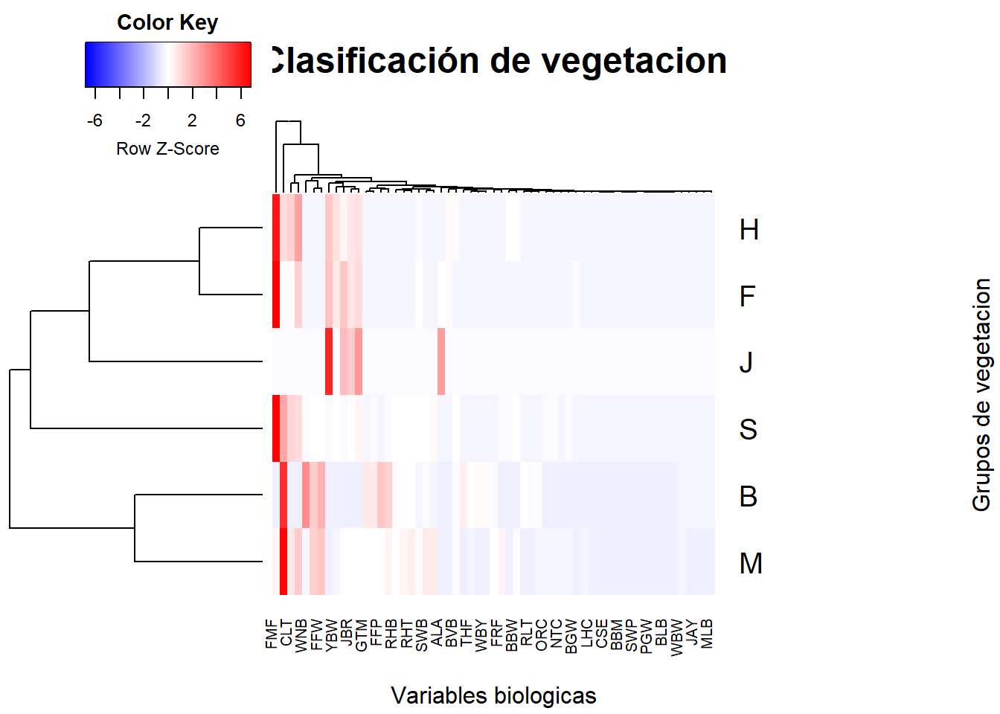
Figura 16: Mapa de calor que relaciona a las variables biologicas y a los tipos de vegetacion.
En esta figura se puede notar que las especies que mas aportan a la clasificacion del analisis cluster son: Regulus goodfellowi (FMF), Parus ater (CLT), Dendrocopos leucotos (WBN), Dicaeum ignipectus (FFW), Cettia acanthizoides (YBW), Tarsiger johnstoniae (JBR), y Pericrocotus solaris (GTM)
Referencias
Buckley, LB, Khaliq, I., Swanson, DL y Hof, C. (2018). ¿El metabolismo limita el área de distribución deaves y mamíferos y predice cambios en respuesta al cambio climático? Ecología y evolución , 8 (24),12375-12385.
Cardona Zuluaga, JF (2023). Límites altitudinales y patrones de rotación en la diversidad de aves en ungradiente de los Andes centrales de Colombia.
Caughley, G., Grice, D., Barker, R. y Brown, B. (1988). El borde del rango. La Revista de Ecología Animal,771-785.
Ding, T.-S. (1993) Avian community ecology of mature forests in Mt. Yushan. Master Thesis, NationalTaiwan University, Taiwan.
Ding, T.-S., Yuan, H.-W., Geng, S., Lin, Y.-S. & Lee, P.-F. (2005) Energy flux, body size and density inrelation to bird species richness along an elevational gradient in Taiwan. Global Ecology andBiogeography, 14: 299-306.
Londoño, GA, Chappell, MA, Jankowski, JE y Robinson, SK (2017). ¿Los costos termorreguladores limitanla distribución altitudinal de las aves del bosque andino? Ecología funcional , 31 (1), 204-215.
Marrón, JH (1984). Sobre la relación entre abundancia y distribución de especies. El naturalistaamericano , 124 (2), 255-279. Martin, K., Altamirano, T., Zwaan, D., Hick, K., Vanderpas, A., Wilson S. (2021). Avian ecology andcommunity structure across elevation gradients: The importance of high latitude temperate mountainhabitats for conserving biodiversity in the Americas.
Ejecutar el código
---title: "Evaluación en la composición de aves bajo diferentes tipos de coberturas vegetales a lo largo de la montaña Yushan, Taiwán."subtitle: "Datos aves,Taiwan"description: Informe final sobre el analisis exploratotio, ordenacion,clasificacin y prueba de hipotesis multivariada de la base de datos Aves de la montaña Yushan, Taiwan.author: name: Luis Menco, Jesus Villar y Winston Bonnetttitle-block-banner: "2A8C19"format: html: toc: True # Tabla de contenido toc-title: Menú flotante code-tools: true # Códigos descargables code-fold: true # Visualización del código css: "stile-justify - Copy.css" # Justificación del textolang: Es-es #Legunaje del textoeditor: markdown: wrap: 72---## [Introducción]{style="color: #3690c0;"}La riqueza y composición de especies pueden explicarse mediante gradientes ambientales (Caughley et al., 1988). La densidad de aves a lo largo de estos gradientes es un concepto clave en ecología y biología de la conservación, refiriéndose a la variación de la cantidad de aves en relación con factores ambientales como altitud, temperatura o vegetación. La distribución de especies a lo largo de estos gradientes está condicionada por factores abióticos y bióticos, determinantes para su persistencia temporal y espacial (Marrón, 1984). El desplazamiento entre gradientes de elevación implica cambios en las condiciones locales debido a variaciones ambientales como temperatura, disponibilidad de alimento y tipo de vegetación, afectando directamente a las comunidades de aves (Cardona, 2023).El sistema montañoso de Yushan, Taiwán, es un sitio óptimo para estudiar la densidad y biodiversidad de aves, ya que facilita una rápida sucesión de especies a través de distintas altitudes. La mayoría de las investigaciones sobre patrones biogeográficos en montañas se han centrado en regiones tropicales, y Yushan se encuentra dentro de esta categoría (Martin et al., 2021). Estudios como los de Ding (1993) y Ding et al. (2005) proporcionan datos sobre comunidades de aves a lo largo del gradiente de elevación en Yushan, recopilando información sobre variables ambientales del sistema montañoso. El primer estudio reveló un incremento evidente en la riqueza y diversidad de especies de aves a través de comunidades sucesionales progresivas. En este contexto, surge la pregunta: ¿Cómo afecta el tipo de vegetación a la densidad de aves, considerando el efecto de variables ambientales?## [Objetivos]{style="color: #3690c0;"}### [Objetivo general]{style="color: #3690c0;"}Determinar los cambios en la composición de aves en diferentes tipos devegetación en la montaña Yushan, Taiwán.### [Objetivos específicos]{style="color: #3690c0;"}- Evaluar la composición de aves encontradas en los diferentes tipos de vegetación.- Identificar como las variables ambientales condicionan la distribución y composición de aves encontradas en la montaña Yushan en diferentes tipos de vegetación.## [Hipótesis]{style="color: #3690c0;"}### [Hipótesis con la densidad de aves]{style="color: #3690c0;"}**Ho:** No se evidencian diferencias en la densidad de aves para lostipos de vegetación.**Ha:** Se evidencian diferencias en la densidad de aves para los tiposde vegetación.### [Hipótesis con las variables ambientales]{style="color: #3690c0;"}**Ho:** No se evidencian diferencias en las variables ambientales paralos tipos de vegetación.**Ha:** Se evidencian diferencias en las variables ambientales para lostipos de vegetación.## [Diagrama de flujo]{style="color: #3690c0;"}## [Figuras exploratorias]{style="color: #3690c0;"}Cargar librerias```{r warning=FALSE, message=FALSE}library(tidyverse)library(xtable) # Importar y exportarlibrary(openxlsx) # exportar "*.xlsx" library(readxl) # Importar y exportarlibrary(gtable) # Importar y exportarrequire(stats) # No se requiere instalarlibrary(lattice) # No se requiere instalarlibrary(ggrepel) # insertar rótulos a los puntosrequire(SciViews) # Fig. dispersión con coef. de pearsonlibrary(plotrix) # Figuras de cajas con múltiples variableslibrary(corrplot) # Figuras de elipseslibrary(psych) # Matrices de correlación para figuras de elipseslibrary(GGally) # Requerido para figura de pares con ggpairslibrary(gganimate) # Para figuras animadas de dispersiónlibrary(reshape) # Figuras de cajas con múltiples variableslibrary(gridExtra) # Para figuras estadísticas (varios factores)library(grid) # Para figuras estadísticas (varios factores)```Cargar base de datos (Aves, Taiwan)```{r warning=FALSE,message=FALSE}datos <-read.csv2("Aves_F.csv") # paquete "utils"``````{r}amb = datos[,c(62:71)]biol = datos[,c(3:61)]```### [Extraer las especies mas abundantes]{style="color: #3690c0;"}```{r}# Extraer los promedios de las abundanciasprom =colMeans(biol)# Extraer las 9 especies más abundantes # FALSE muestra las 15 menos abundantesab <-names(sort(prom, decreasing =TRUE)[1:9])# Crear un nuevo dataframe con las dos columnas seleccionadasbiol.ab <-data.frame(datos[, ab])# Otra opción de dataframe: spe.ab <- datos1[, ab]```### [Figuras de elipses]{style="color: #3690c0;"}#### [Matriz de correlaciones]{style="color: #3690c0;"}```{r}# Matriz de correlaciones (M)M <-cor(amb,biol.ab)```#### [Elipse]{style="color: #3690c0;"}```{r}#| label: fig-fig2#| fig-cap: "Relación entre las variables ambientales y biológicas, a partir de Figuras de elipses, en la cual aquellas con color azul intenso indican relaciones lineales positivas, y las de rojo intenso asocian regresiones lineales negativas."# Elipse con colorcorrplot(M, method ="ellipse", type="upper")```Troglodytes troglodytes (WRB) muestra una correlación negativa con laaltura del dosel (CH), prefiriendo hábitats con vegetación baja y densacerca del suelo, lo que facilita la anidación, el forrajeo y laprotección contra depredadores. Asimismo, exhibe una correlaciónpositiva con la cobertura del suelo (GC), indicando una preferencia poráreas con una mayor densidad de vegetación en el suelo, lo queproporciona más lugares para anidar y una mayor disponibilidad dealimento. Por último, presenta una correlación negativa con la coberturade hierbas (HC), evitando hábitats dominados por hierbas y optando poráreas con troncos y estructuras arbóreas en la orilla de los ríos,posiblemente debido a las oportunidades de alimentación y ladisponibilidad de sitios de anidación y refugio.Por otra parte, Abroscopus albogularis y Liocichla steerii presentaronuna correlación positiva con la cubierta de hierbas (HC), lo que sugiereuna preferencia por hábitats con una densa vegetación herbácea. Estopodría estar relacionado con su ecología y comportamiento, ya que estasespecies pueden encontrar recursos importantes en este tipo de hábitat.Por el contrario, estas especies mostraron una correlación negativa conla cobertura del suelo (GC). Esta asociación puede reflejar unapreferencia por evitar áreas con una cobertura densa de vegetación en elsuelo. Podría ser que Abroscopus albogularis y Liocichla steeriiprefieran hábitats más abiertos o con menos obstáculos en el suelo parasu movilidad y búsqueda de alimento.### [Figuras de dispersión]{style="color: #3690c0;"}#### [Figura de pares para las variables biológicas ]{style="color: #3690c0;"}La @fig-fig3 muestra un panel con varias figuras de dispersion entre lasparejas de varriables biologicas (densidad de aves).```{r warning=FALSE, message=FALSE}#| label: fig-fig3#| fig-cap: "Relación entre las variables biologicas en los seis tipos de vegetacion estudiados, con colores para definir a cada tipo de vegetacion."datos$Veg. <-as.factor (datos$Veg.)ggpairs(data = biol.ab, # Data frameaes(color = datos$Veg., alpha =0.4), # Color por vegetacion upper =list(continuous="points"))```Se puede observar que existe cierta diferenciación de las parejas devariables según el tipo de vegetación, debido a que en la mayoría de losgráficos de este panel, los puntos del mismo color presentan ciertonivel de agrupación. Además, pocas parejas de variables muestran puntosdispersos y mezclados. Este patrón refleja las preferencias específicasde las especies de aves por hábitats particulares, como áreas convegetación herbácea densa o cobertura arbórea, que ofrecen condicionesóptimas para anidar, alimentarse y encontrar refugio.#### [Figura de pares para las variables ambientales]{style="color: #3690c0;"}La @fig-fig4 muestra un panel con varias figuras de dispersion entre lasparejas de varriables ambientales.```{r warning=FALSE,message=FALSE}#| label: fig-fig4#| fig-cap: "Relación entre las variables ambientales en los seis tipos de vegetacion estudiados, con colores para definir a a cada tipo de vegetacion."ggpairs(datos, # Data framecolumns =c(62:69), # Columnas o variablesaes(color = Veg., alpha =0.5), # Color por vegetacion upper =list(continuous="points")) ```En general, se puede observar que las diferencias entre las parejas devariables son moderadas según el tipo de vegetación. Esto se evidenciaen la disposición de los puntos, los cuales comparten el mismo colorpara representar cada tipo de vegetación. En algunos casos, estos puntostienden a estar agrupados, mientras que en otros se dispersan y semezclan con puntos de otros colores. Esta variabilidad refleja lasdistintas propiedades ambientales de los tipos de vegetación, lo que asu vez ofrece una variedad de hábitats para el mantenimiento de una ricadiversidad de aves.### [Figura de cajas y bigotes]{style="color: #3690c0;"}La @fig-fig5 muestra un panel con varias figuras de dispersion de lasvariables ambientales con respecto al tipo de vegetacion.```{r warning=FALSE, message=FALSE}#| label: fig-fig5#| fig-cap: "Variacion de las variables ambientales segun el tipo de vegetacion."datos$Veg. <-as.factor (datos$Veg.)ggplot(melt(datos[,c(2,c(62:71))]), aes(x=variable, y=value)) +geom_boxplot(aes(fill=Veg.)) +scale_fill_manual(values =c('#fc8d59','#ffffbf','#99d594','#377eb8','#33a02c','#54adf7')) +labs(x="",y="") +facet_wrap(~ variable,scales="free") +theme_bw()```En general, se observa que en la mayoría de las cajas, las medianas nocoinciden entre sí. Esto indica que existen diferencias moderadas en lasvariables ambientales relacionadas con los tipos de vegetación.Podemos notar que para la cobertura del suelo (GC) y la cobertura dehierbas (HC) hay muy poca variación en cuanto a la distribución devalores, difiriendo entre los tipos de vegetación. En el caso de lacobertura del dosel (T1C) y el índice de diversidad de altura delfollaje (FHD), hay una pequeña variación en su distribución de valores yla diferencia entre los tipos de vegetación es muy baja. Para los casosdel volumen total de follaje (TFV), cobertura de arbustos (SC),cobertura arbórea secundaria (T2C) y altura del dosel (CH), ladistribución de su rango de valores es más alto y la diferenciaciónentre los tipos de vegetación es moderada.### [Figura de barras]{style="color: #3690c0;"}En esta gráfica se pueden apreciar diferencias visuales en cuanto a lacomposición de aves según los tipos de vegetación. Esto probablemente sedebe a que cada hábitat ofrece condiciones ambientales distintas, lo queconlleva a variaciones en la diversidad a lo largo de este gradiente.## [Análisis de componentes principales (PCA) ]{style="color: #3690c0;"}Cargar librerias```{r warning=FALSE,message=FALSE}# Librerías requeridaslibrary(ggplot2)library(reshape2)library(ggrepel)library(vegan)library(factoextra)library(ggsci)library(ggforce)library(concaveman)library(corrplot)library(tidyverse)library(xtable) # Importar y exportarlibrary(openxlsx) # exportar "*.xlsx" library(readxl) # Importar y exportarlibrary(gtable) # Importar y exportarrequire(stats) # No se requiere instalarlibrary(lattice) # No se requiere instalarlibrary(ggrepel) # insertar rótulos a los puntosrequire(SciViews) # Fig. dispersión con coef. de pearsonlibrary(plotrix) # Figuras de cajas con múltiples variableslibrary(corrplot) # Figuras de elipseslibrary(psych) # Matrices de correlación para figuras de elipseslibrary(GGally) # Requerido para figura de pares con ggpairslibrary(gganimate) # Para figuras animadas de dispersiónlibrary(reshape) # Figuras de cajas con múltiples variableslibrary(gridExtra) # Para figuras estadísticas (varios factores)library(grid) # Para figuras estadísticas (varios factores)library(factoextra)library(FactoMineR)library(ggplot2)library(ggrepel)library(tidyverse)``````{r}datos$Veg. <-as.factor (datos$Veg.)```### [Paso 1: Ajuste de las bases de datos fisiqcoquimica (amb) y biológica (tax.hel)]{style="color: #3690c0;"}```{r}# Variables ambientalesamb=log10(datos[,c(62:71)]+1)``````{r}# Taxones transformados con Hellingertax.hel=decostand(datos[,c(3:61)],"hellinger")```### [Paso 2: PCA con paquete factoextra]{style="color: #3690c0;"}#### [Matriz de autovalores]{style="color: #3690c0;"}```{r}pca1 <-prcomp(amb,scale.=T)summary(pca1)```En esta matriz de autovalores se puede observar que el PCA explicaaproximadamente el 83% de la variación de los datos. Esto indica que elanálisis se ajusta significativamente a los datos, lo que hace que estesea un buen gráfico explicativo.#### [Contribución eje 1]{style="color: #3690c0;"}```{r}#| label: fig-fig7#| fig-cap: "Contribuciones de las variables ambientales, dimensión 1."fviz_contrib(pca1,choice="var",axes=1)```Esta gráfica muestra la contribución de las variables ambientales alcomponente 1. De esta manera, la densidad de árboles (TD), la coberturadel suelo (GC), la cubierta de hierbas (CH), el índice de diversidad dealtura del follaje (FHD), la cubierta de dosel (T1C) y la coberturaarbórea secundaria (T2C) son las que tienen más peso en la dimensión 1.#### [Contribución eje 2]{style="color: #3690c0;"}```{r}#| label: fig-fig8#| fig-cap: "Contribuciones de las variables ambientales, dimensión 2."fviz_contrib(pca1,choice="var",axes=2)```Esta gráfica muestra la contribución de las variables ambientales alcomponente 2. De esta manera, cobertura de arbustos (SC), cubierta dehierbas (HC) y Volumen total de follaje (TFV) son las que tienen máspeso en la dimensión 2.### [Paso 3: Gráfico de PCA]{style="color: #3690c0;"}```{r warning=FALSE,message=FALSE}#| label: fig-fig9#| fig-cap: "Análisis de componentes principales (PCA). Se observa el biplot con las variables ambientales (Flechas,Texto en negro), las varibles biologicas (texto en gris) de densidad de aves y los tipos de vegetacion (Elipses)."res.pca<-PCA(amb, scale.unit =TRUE, graph =FALSE, ncp =10)# con variables ambientales# gráfico de PCA con variables ambientales (aqui no estan incluidas las especies)p3<-fviz_pca_biplot(res.pca, geom.ind ="point", col.var ="black",arrowsize=0.4, col.ind = datos$Veg., repel =TRUE, addEllipses =TRUE, legend.title="Vegetación", palette =c("#ff595e", "#ffd166", "#0a9396", "#e76f51", "#8d99ae", "#6a994e")) +theme_bw()# PCA con variables ambientales y especiesacp2<-PCA(tax.hel, graph =FALSE, ncp =23 )coord<- acp2$var$coordcoord<- coord[,1:2]coord<-data.frame(coord)colnames(coord)<-c("PC1", "PC2")coord<-transform(coord, PC1=PC1*5, PC2=PC2*5)fviz_add(p3, coord, color ="#6c757d", geom=c("text"), repel =TRUE, labelsize =3, pointsize =1) +theme(legend.position ="bottom",legend.box ="horizontal")+ggtitle("")```En este gráfico de PCA se observan dos grupos de vegetación (Bosques de cicuta (H) y Bosques de abetos (F) que presentan una composición similar en cuanto a las variables ambientales. Por otro lado, los tipos de vegetación Bosques de piceas (S), Matorral de enebro (J) y bosques mixtos de coníferas y latifoliadas (M) muestran una composición diferente en relación con las variables ambientales que los grupos anteriores. Dos grupo de vegetación (H y F), se caracteriza por valores altos en variables como Cobertura del suelo (GC), Porcentaje de coníferas (CP) y Cobertura de arbustos (SC). En este grupo, las especies Cettia acanthizoides (YBW), Tarsiger indicus (WBB), Syrmaticus mikado (MKP), Muscicapa ferruginea (FRF), Pyrrhula erythaca (BVR), Nucifraga caryocatactes (NTC) y Regulus goodfellowi (FMF) están más asociadas con estos tipos de vegetación.Por otro lado, los otros grupos de vegetacion (S, J y M), se caracteriza por valores altos en variables como Volumen total de follaje (TFV), Índice de diversidad de altura del follaje (FHD), Cobertura del dosel (T1C), Cobertura de árboles secundarios (T2C), Cobertura de hierbas (HC), Densidad de árboles (TD) y Altura del dosel (CH). En este grupo, especies como Garrulus glandarius (JAY), Hypothymis azurea (BBM), Spilornis cheela (CSE), Aegithalos concinnus (RHT), Glaucidium brodiei (CPO), Dendrocopos leucotos (WBW), Sitta europaea (NTH), Stachyris ruficeps (RHB), Parus monticolus (GBT) y Pomatorhinus ruficollis (LSB) están más asociadas con este tipo de vegetación.Por ultimo el tipo de vegetaion bosques de hoja perenne de hoja ancha (B) presenta poca asociacion con las variables ambientales y biologicas.## [Análisis de escalamiento multidimensional no métrico]{style="color: #3690c0;"}Cargar librerias```{r warning=FALSE,message=FALSE}# Librerías requeridaslibrary (ade4)require(vegan)library(analogue)library(magrittr)library(dplyr)library(ggpubr)library(vegan)library(ggplot2)library(ggrepel)```### [Ordenación de las especies según los tipos de vegetación]{style="color: #3690c0;"}```{r}# 1. 1) Ordenación con el nmdsdatos.nmds <-metaMDS(datos[,3:61],trace =FALSE,distance ="bray")datos.nmds```El estres es 0.05923538 por lo tanto este analisi tiene un buen ajuste yes explicativo para el conjunto de datos evaluados.### [Paso 2: NMDS con paquete ggplot2]{style="color: #3690c0;"}#### [Coordenadas de los sitios y el factor (coord.sit)]{style="color: #3690c0;"}```{r}coord.sit <-as.data.frame(datos.nmds$points) # Coordenadas de los sitioscoord.sit$sitio <-rownames(coord.sit) # Crear una columna con nombres de los sitioscoord.sit$grp <- datos$Veg. # Adicionar columna de grupos por región ```#### [Coordenadasde las especies (coord.tax)]{style="color: #3690c0;"}```{r}coord.tax <-as.data.frame(datos.nmds$species) # Dos primeros ejescoord.tax$especies <-rownames(coord.tax) # Insertar columna con nombres de las especies```#### [Figura del NMDS]{style="color: #3690c0;"}```{r warning=FALSE,message=FALSE}#| label: fig-fig10#| fig-cap: "Escalamiento multidimensional no métrico (NMDS), aplicado a la densidad de aves según el tipo de vegetación."library(ggplot2)library(ggrepel)p1<-ggplot(coord.sit, aes(x=MDS1, y=MDS2)) +# Sitios# geom_text_repel(data = coord.sit,aes(MDS1,MDS2,label = as.character(moll_mnds$profundidad)),# size=4)+ # Muestra el cuadro de la figurageom_point(aes(fill=grp),size=1.3, color="black", pch=21, alpha=0.5)+# Especies geom_segment(data = coord.tax,aes(x =0, y =0, xend = MDS1, yend = MDS2), arrow =arrow(angle=0,length =unit(0,"cm"),type ="closed"),linetype=0, size=0,colour ="red")+#Factor#geom_polygon(data=coord.sit,aes(x=MDS1,y=MDS2,fill=prof,group=prof),alpha=0.30) +stat_ellipse(geom ="polygon", aes(fill = grp), alpha =0.15)+geom_hline(yintercept=0,linetype=2,size=0.6, color="gray7") +geom_vline(xintercept=0,linetype=2,size=0.6, color="gray7")+guides(shape=guide_legend(title=NULL,color="black"),fill=guide_legend(title=NULL))+theme_bw()+theme(panel.grid=element_blank(), legend.position ="top")+geom_text_repel(data = coord.tax,aes(MDS1,MDS2,label=especies),colour ="black")+labs(x="nMDS 1", y="nMDS2")+guides(fill =guide_legend(title ="Grupos", nrow =2))p1 +geom_text(data =data.frame(x =2.15803000355563, y =-1.02305508763972, label ="Estrés = 0.05923538 "),mapping =aes(x = x, y = y, label = label),fontface =2, inherit.aes =FALSE)```En esta figura de ordenación se pueden notar la formación de variosgrupos, caracterizados por los bosques siempre verdes de hoja ancha (B),los cuales presentan una mayor composición de especies. Hay dos gruposintermedios en su composición de aves, que son los bosques mixtos deconíferas y latifoliadas (M), y los bosques de picea (S), que tienenunas pocas especies. Por último, otro gran grupo está formado por losBosques de cicuta (H), que es el segundo en cuanto a la composición deespecies y se encuentra superpuesto con los bosques de abetos (F) enmenor proporción y con una menor composición de especies. El últimogrupo es el matorral de enebro (J), que es el que menor composición deespecies presenta y se encuentra en superposición con el tipo devegetación antes mencionado.## [Análisis de Cluster - CLA]{style="color: #3690c0;"}Cargar librerias```{r warning=FALSE,message=FALSE}# Librerías requeridaslibrary(ellipse)require(gclus)require(SciViews)require(ade4)require(vegan)library(corrplot)library(ggplot2)library(pheatmap)library("gplots")library(gridExtra)library(factoextra)library(reshape)```### [PASO 1. Distancia entre observaciones]{style="color: #3690c0;"}```{r}d.bray <-dist(biol)```Se optó por utilizar la distancia de Bray-Curtis en este análisis debidoa la presencia de datos con valores cero en la base de datos. Estamedida corrige el efecto de los ceros dobles, ajustándose mejor a losdatos de abundancia de especies.### [Paso 2: Elección del método de agrupación de mayor ajuste]{style="color: #3690c0;"}#### [ Siete métodos de agrupamiento]{style="color: #3690c0;"}```{r}# Método 1. Vecino más cercano "Cl.single", función "hclust" y método "single"Cl.single <-hclust(d.bray,method="single")# Método 2. Vecino más lejano "Cl.complete", función "complete" Cl.complete<-hclust(d.bray,method="complete")# Método 3. UPGMA función "average" Unión Promedio no PonderadoCl.upgma<-hclust(d.bray,method="average")# Método 4. UPGMC función "mcquitty" Unión Promedio PonderadoCl.upgmc<-hclust(d.bray,method="mcquitty")# Método 5. WPGMA función "centroid"Cl.wpgma<-hclust(d.bray,method="centroid")# Método 6. WPGMC función "median"Cl.wpgmc<-hclust(d.bray,method="median")# Método 7. WARD, función "ward"Cl.ward<-hclust(d.bray,method="ward.D")```#### [Figuras de los dendogramas con los siete métodos de agrupamiento]{style="color: #3690c0;"}```{r warning=FALSE, message=FALSE}#| label: fig-fig11#| fig-cap: "Cuatro dendogramas jerárquicos con la distancia Bry-Curtis."f1 <-fviz_dend(Cl.single, k =6, # k grupos (opcionales)cex =0.7, # tamaño del texto de las ramasylab ="Bray-Curtis", # Rotulo de la distanciamain ="Vecino más Cercano - Single") # Rotulo de títulof2 <-fviz_dend(Cl.complete, k =6, # k grupos (opcionales)cex =0.7, # tamaño del texto de las ramasylab ="Bray-Curtis", # Rotulo de la distanciamain ="Vecino más Lejano - Complete") # Rotulo de títulof3 <-fviz_dend(Cl.upgma, k =6, # k grupos (opcionales)cex =0.7, # tamaño del texto de las ramasylab ="Bray-Curtis", # Rotulo de la distanciamain ="Unión Promedio no Ponderado - upgmc") # Rotulo de títulof4 <-fviz_dend(Cl.upgmc, k =6, cex =0.7, ylab ="Bray-Curtis", main ="Unión Promedio Ponderado - upgmc") grid.arrange(f1,f2,f3,f4, ncol =2)```Se observa la formación de dos grandes grupos con el vecino más cercanoy de seis grupos con el vecino más lejano, utilizando la unión promediono ponderada y la unión promedio ponderada.```{r warning=FALSE, message=FALSE}#| label: fig-fig12#| fig-cap: "Tres dendogramas jerárquicos con la distancia Bry-Curtis."f5 <-fviz_dend(Cl.wpgma, k =6, cex =0.7, ylab ="Bray-Curtis", main ="Unión Centroide no Ponderado - wpgma") f6 <-fviz_dend(Cl.wpgmc, k =6, cex =0.7, ylab ="Bray-Curtis", main ="Unión Centroide Ponderado - wpgmc") f7 <-fviz_dend(Cl.ward, k =6, cex =0.7, ylab ="Bray-Curtis", main ="Método de Ward") grid.arrange(f5,f6,f7, ncol =2)```Se puede observar que con la unión centroide no ponderada se forman seisgrupos, pero estos están dispersos. Con la unión centroide ponderada,aparecen dos grandes grupos y tres grupos pequeños. Finalmente, con elmétodo de Ward se observa que se corrige lo anterior, obteniendo seisgrupos con proporciones similares de representantes.#### [Selección del mejor método de agrupamiento - Correlación Cofenética]{style="color: #3690c0;"}##### [Cálculo de las correlaciones cofenéticas]{style="color: #3690c0;"}```{r}# (1) Correlación cofenpetica para "single"cofenet1 <-cophenetic(Cl.single)simple =cor(d.bray,cofenet1)# (2) Correlación cofenética para "complete"cofenet2<-cophenetic(Cl.complete)compl =cor(d.bray,cofenet2)# (3) Correlación cofenética para "average"cofenet3<-cophenetic(Cl.upgma)upgma =cor(d.bray,cofenet3)# (4) CCorrelación cofenética para "mcquitty"cofenet4<-cophenetic(Cl.upgmc)upgmc =cor(d.bray,cofenet4)# (5) Correlación cofenética para "centroid"cofenet5<-cophenetic(Cl.wpgma)wpgma =cor(d.bray,cofenet5)# (6) Correlación cofenética para "median"cofenet6<-cophenetic(Cl.wpgmc)wpgmc =cor(d.bray,cofenet6)# (7) Correlación cofenética para "ward"cofenet7<-cophenetic(Cl.ward)ward =cor(d.bray,cofenet7)```###### [Tabulación de las correlaciones cofenéticas]{style="color: #3690c0;"}```{r}# data frame con cofenéticoscofeneticos =data.frame(simple,compl,upgma,upgmc, wpgma,wpgmc,ward)# cofenéticos por cada métodos (Met)cofenet=data.frame(Met =1:7,Cofen=t(round(cofeneticos,3)))# tabla con orden descendente de cofenéticoscof_ordenado = cofenet[order(cofenet$Cofen, decreasing =TRUE), ]cof_ordenado```En este paso, se observa que el método que obtuvo la mayor correlacióncofenética fue UPGMA con 0.772. Por lo tanto, este método es elseleccionado para llevar a cabo el análisis de agrupamiento.###### [Figuras de algunas correlaciones cofenéticas vs. matriz de distancia]{style="color: #3690c0;"}```{r}# convertir matricesde distancia a vectoresd.bray <-as.vector(d.bray)d.cofenet1 <-as.vector(cofenet1)d.cofenet2 <-as.vector(cofenet2)d.cofenet3 <-as.vector(cofenet3)d.cofenet4 <-as.vector(cofenet4)# crear un data frame con los vectores y agregar una columna de etiquetassimple1 <-data.frame(d.bray, d.cofenet1, d.cofenet2, d.cofenet3, d.cofenet4)``````{r warning=FALSE, message=FALSE}#| label: fig-fig13#| fig-cap: "Cuatro regresiones entre la distancia Bry-Curtis empleada y las distancias cofenéticas de cada método de agrupamiento definido."# Figuras correlaciones cofenéticaslibrary(ggplot2)# (1) distancia cofenética para "unión simple" f1<-ggplot(simple1, aes(d.bray,d.cofenet1))+geom_point(size=3, color="#4daf4a") +geom_smooth(method="lm",se=FALSE,color="#377eb8") +geom_smooth(method="loess",se=FALSE,color ="#e41a1c",lty=2,size=1.3) +labs(title="Unión Simple",subtitle=paste("Correlación cofenética",round(cor(d.bray,cofenet1),4)),x="Distancia Bray-Curtis",y="Distancia cofenética") +theme_bw()# (2) distancia cofenética para "unión completa" f2<-ggplot(simple1, aes(d.bray,d.cofenet2))+geom_point(size=3, color="#4daf4a") +geom_smooth(method="lm",se=FALSE,color="#377eb8") +geom_smooth(method="loess",se=FALSE,color ="#e41a1c",lty=2,size=1.3) +labs(title="Unión Completa",subtitle=paste("Correlación cofenética",round(cor(d.bray,cofenet2),4)),x="Distancia Bray-Curtis",y="Distancia cofenética") +theme_bw()# (3) distancia cofenética para "unión upgma" f3<-ggplot(simple1, aes(d.bray,d.cofenet3))+geom_point(size=3, color="#4daf4a") +geom_smooth(method="lm",se=FALSE,color="#377eb8") +geom_smooth(method="loess",se=FALSE,color ="#e41a1c",lty=2,size=1.3) +labs(title="Unión promedio no ponderado - upgma",subtitle=paste("Correlación cofenética",round(cor(d.bray,cofenet3),4)),x="Distancia Bray-Curtis",y="Distancia cofenética") +theme_bw()# (4) distancia cofenética para "unión upgmc" f4<-ggplot(simple1, aes(d.bray,d.cofenet4))+geom_point(size=3, color="#4daf4a") +geom_smooth(method="lm",se=FALSE,color="#377eb8") +geom_smooth(method="loess",se=FALSE,color ="#e41a1c",lty=2,size=1.3) +labs(title="Unión promedio ponderado - upgmc",subtitle=paste("Correlación cofenética",round(cor(d.bray,cofenet4),4)),x="Distancia Bray-Curtis",y="Distancia cofenética") +theme_bw()grid.arrange(f1,f2,f3,f4, ncol =2)```En estas figuras se puede observar la correlación entre la distanciacofenética y la distancia Bray-Curtis. Cuanto más ajustadas estén ambasa la línea de regresión, más fuerte será su correlación; En nuestrocaso, la correlación dio 0.772, correspondiente al método UPGMA. Esto sepuede apreciar en la gráfica donde observamos que la distanciaBray-Curtis y la distancia cofenética tienen el mayor ajuste a la líneade regresión con el método de UPGMA.### [Paso 3: Número de grupos formados]{style="color: #3690c0;"}#### [Niveles de Fusión]{style="color: #3690c0;"}```{r}# Base de variables a relacionar (amb)biol <- datos[,c(3:61)]``````{r}# Crear un data.frame con los datos de altura, k y número de clusterf1 <-data.frame(h = Cl.upgma$height, k =nrow(biol):2, cluster =nrow(biol):2)``````{r}#| label: fig-fig14#| fig-cap: "Metodo de niveles de fusión"# Crear el gráfico de dispersión y agregar etiquetas de textoggplot(f1, aes(x = h, y = k, label = cluster)) +geom_point(color ="grey") +geom_text(color ="red", size =3, vjust =-0.5) +geom_step(color ="grey", direction ="vh") +# Personalizar el gráfico con títulos, etiquetas de ejes y paleta de coloresggtitle("Niveles de Fusión - Distancia Bray-Curtis - UPGMA") +ylab("k (Número de Cluster)") +xlab("h (Altura del Nodo)") +scale_color_manual(values =c("grey", "red")) +theme(axis.title =element_text(size =16)) +theme_classic()```Se puede observar que el número que tiene una mayor distancia es el 3.Por lo tanto, de acuerdo con este método de niveles de fusión, se forman3 grupos para el análisis de clúster.#### [Número optimo de clusters de acuerdo al Ancho de silueta. Índice de calidad de Rousseeuw]{style="color: #3690c0;"}```{r}# Base de datos (biol)biol <- datos[,c(3:61)]# Distancia utilizada (d.euclid)d.bray <-dist(datos[,c(3:61)])# Método de agrupamiento seleccionado (cl.upgma)Cl.upgma<-hclust(d.bray,method="average")``````{r}# 1. Crear un vector vacío (biol.vacio) con asw valoresbiol.vacio <-numeric(nrow(biol))# 2. Silueta "sil" for(k in3: (nrow(biol)-1)){ sil <-silhouette(cutree(Cl.upgma,k=k),d.bray) biol.vacio[k]<-summary(sil)$avg.width} # 3. Mejor o mayor amplitud de silueta (2 particiones)k.mejor <-which.max(biol.vacio)k.mejor ``````{r}#| label: fig-fig15#| fig-cap: "Metodo del ancho de silueta"# Grafica de siluetaplot(1:nrow(biol),biol.vacio,type="h",main="Silueta-Número Óptimo de Clusters", xlab="(Número de grupos)",ylab="Amplitud promedio de silueta")axis(1,k.mejor,paste("optimum",k.mejor,sep="\n"),col="red",font=2,col.axis="red")points(k.mejor,max(biol.vacio),pch=16,col="red",cex=1.5)```En esta gráfica se puede corroborar lo encontrado mediante el método deniveles de fusión, ya que el método de ancho de silueta identifica 3grupos para el análisis de clúster.```{r}cat("","Silueta-Número óptimo de Clusters k=",k.mejor,"\n","Con una aplitud promedio de silueta",max(biol.vacio),"\n")```##### [Figura del dendograma jerárquico final]{style="color: #3690c0;"}```{r warning=FALSE, message=FALSE}#| label: fig-fig16#| fig-cap: "Dendograma jerárquico final con los tres grupos asignados."# Dendograma final fviz_dend(Cl.upgma, k =3, # k gruposcex =0.6, # tamaño del texto de las observacionesylab ="Distancia Bray-Curtis", # Rotulo de la distanciamain ="Unión Promedio no Ponderada (UPGMA)", # Rotulo de títulolower_rect =0, # Inicio de los rectángulos en cerok_colors =c("#00AFBB","#FC4E07","#feb24c"),color_labels_by_k =TRUE, # Colores para cada gruporect =TRUE) # Rectángulos de cada grupo```En el clúster jerárquico final se puede visualizar la formación de lostres grupos encontrados por el métodos UPGMA. De esta manera, se puedeobservar que hay dos grupos que son más similares entre sí (color rojo ynaranja) y un grupo con una composición un poco más diferente (colorazul).#### [Figura del dendograma no jerárquico final]{style="color: #3690c0;"}##### [Agrupamiento elegido en el paso 2 (upgma)]{style="color: #3690c0;"}```{r}# Matriz de distanciad.bray <-dist(biol)# Método 3. UPGMA función "average" Unión Promedio no PonderadoCl.upgma<-hclust(d.bray,method="average")```##### [Generación de la variable agrupadora (gr)]{style="color: #3690c0;"}```{r}# Variable agrupadora con k=3 clústergrp <-cutree(Cl.upgma, k =3) # Grupos generados "grp" grl <-levels(factor(grp)) # Rotulos de los grupos formados``````{r}# Incluir la variable agrupadora en la base de datosdatos.1=data.frame(grp,biol) # Nuevo dataframe con la variable agrupadora (gr)```#### [Generación del clúster No Jerárquico (K-Means)]{style="color: #3690c0;"}```{r}#| label: fig-fig17#| fig-cap: "Dendograma no jerárquico final con los tres grupos asignados."fviz_cluster(list(data = amb, cluster = grp),palette =c('#fc8d59','#377eb8','#99d594'), # Colores para cada grupoellipse.type ="confidence", # Elipsesrepel =TRUE, # Elimina solapamiento de observacionesshow.clust.cent =FALSE, # Muestra a los clúster centradosggtheme =theme_bw()) # Tipo de fondo tomado de ggplot2```En el dendrograma no jerárquico final se logra corroborar lo observadopor el clúster jerárquico final, donde también se formaron tres grupos.Dos de estos grupos muestran una composición similar en cuanto a ladensidad de aves, mientras que un tercer grupo presenta una composiciónde aves diferente respecto a los otros dos.### [Paso 4. Variables de mayor contrinución a la clasificación]{style="color: #3690c0;"}```{r warning=FALSE, message=FALSE}# Extracción de los promedios de las variables para cada sitiolibrary(tidyverse)promedios <- datos %>%subset(select =c("Veg.","ALA", "AWP", "BBM", "BBP", "BBW", "BGW", "BLB", "BLS", "BNB", "BRB", "BRD", "BVB", "CLT", "CPO", "CSE", "FBB", "FFP", "FFW", "FHP", "FLT", "FMB", "FMF", "FMY", "FRF", "GBT", "GNB", "GTM", "ILT", "JAY", "JBR", "LBC", "LHC", "LSB", "MBW", "MKP", "MLB", "NTC", "NTH", "ORC", "PGW", "RBF", "RHB", "RHT", "RLT", "RSB", "STB", "SWB", "SWP", "THF", "VRF", "WBB", "WBW", "WBY", "WES", "WNB", "WRN", "WTB", "YBW", "YLT")) %>%na.omit() %>%group_by(Veg.) %>%summarize(across(everything(), mean))promedios <-data.frame(promedios) # Guardar promedios como dataframe# promedios``````{r}# Seleccionar columnas de 2 a 10 del data frame peces1 y convertirlas en matrizpromedios2 <- promedios %>%subset(select =c(2:60)) %>%as.matrix()``````{r}# Asignar los valores de la primera columna de peces1 como nombres de fila en la matriz peces2rownames(promedios2) <- promedios[,1]``````{r}# Mapa de calor con paquete "stats"hclust.fq <-function(promedios2) hclust(promedios2, method="average") # Inserción de UPGMA``````{r}#| label: fig-fig18#| fig-cap: "Mapa de calor que relaciona a las variables biologicas y a los tipos de vegetacion."library("gplots")heatmap.2(promedios2, # Base de datos en formato matricialmargins=c(5,12), # Margenes de la figurascale ="row", # Estandariza variables diferentes.col =bluered(100), # Colores del mapa de calorxlab ="Variables biologicas", ylab="Grupos de vegetacion", main ="Clasificación de vegetacion", trace ="none", density.info ="none",distfun = dist, # Se puede usar vegdist de "vegan" hclustfun=hclust.fq) # Agrupamiento UPGMA```En esta figura se puede notar que las especies que mas aportan a laclasificacion del analisis cluster son: Regulus goodfellowi (FMF), Parusater (CLT), Dendrocopos leucotos (WBN), Dicaeum ignipectus (FFW), Cettiaacanthizoides (YBW), Tarsiger johnstoniae (JBR), y Pericrocotus solaris(GTM)## [Referencias]{style="color: #3690c0;"}Buckley, LB, Khaliq, I., Swanson, DL y Hof, C. (2018). ¿El metabolismo limita el área de distribución deaves y mamíferos y predice cambios en respuesta al cambio climático? Ecología y evolución , 8 (24),12375-12385.Cardona Zuluaga, JF (2023). Límites altitudinales y patrones de rotación en la diversidad de aves en ungradiente de los Andes centrales de Colombia.Caughley, G., Grice, D., Barker, R. y Brown, B. (1988). El borde del rango. La Revista de Ecología Animal,771-785.Ding, T.-S. (1993) Avian community ecology of mature forests in Mt. Yushan. Master Thesis, NationalTaiwan University, Taiwan.Ding, T.-S., Yuan, H.-W., Geng, S., Lin, Y.-S. & Lee, P.-F. (2005) Energy flux, body size and density inrelation to bird species richness along an elevational gradient in Taiwan. Global Ecology andBiogeography, 14: 299-306.Londoño, GA, Chappell, MA, Jankowski, JE y Robinson, SK (2017). ¿Los costos termorreguladores limitanla distribución altitudinal de las aves del bosque andino? Ecología funcional , 31 (1), 204-215.Marrón, JH (1984). Sobre la relación entre abundancia y distribución de especies. El naturalistaamericano , 124 (2), 255-279.Martin, K., Altamirano, T., Zwaan, D., Hick, K., Vanderpas, A., Wilson S. (2021). Avian ecology andcommunity structure across elevation gradients: The importance of high latitude temperate mountainhabitats for conserving biodiversity in the Americas.